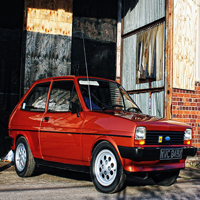
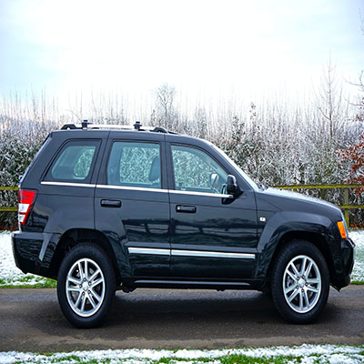
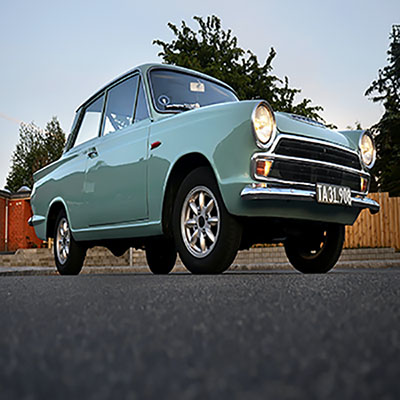
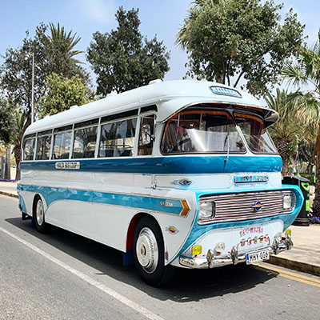

|  | HatchbackA hatchback car is a vehicle that has a large door in the back that swings upward, While many other models also use this type of door, a hatchback car is traditionally looked at as a small coupe- to sedan-size car with a raise-open door in the back instead of a trunk, which usually gives it more storage space. It is commonly referred to as a three-door or five-door car, in reference to the hatchback adding an extra door to the number of side doors the car also has. Hatchback cars are mostly marketed as being versatile vehicles, allowing more storage capacity than a standard car, but better handling and gas mileage (and a lower cost) than vans or sport utility vehicles. This has led to hatchbacks becoming popular in Europe, although they have rarely caught on in the United States. |
|  | SUVSUV stands for sport utility vehicle that is used to denote any vehicle that looks like a station wagon. It means that is has a mini truck kind of platform. Few vehicles from this segment are Mahindra Scorpio, Toyota Fortuner, Maruti Grand Vitara, Tata Safari, Ford Endeavour and Honda CRV. They are known for performing some off road duties. These vehicles are apt for driving rough textured roads. The mid size and full size SUVs have generally three rows of seats and the cargo area is placed behind the last row of seats. It is preferred for people looking out for features like a spacious vehicle with bit off road capability. SUV’s can be easily spotted by their appearances and looks, resembling a big station wagon. |
|  | SedanA three box design with a protruding hood in the front, a passenger cabin in the middle, and a protruding trunk at the rear. Also a practical design - generally with the windscreen (A pillar) meeting the front wheels and rear window (B or C pillar) meeting the rear wheels - both for structural strength but also to maximize usable interior space. The sedan has now been eclipsed by the station wagon - a two box design which is more practical still (some also call them crossovers or SUVs).Everything else - fastbacks, shooting brakes, hatchbacks, targa’s, cabrio’s, coupe’s etc. are a variation of the two. To put in a simple way, it is a car for four or more people.A vehicle with four passenger doors and a liftgate at the rear can be called a four-door hatchback, five-door hatchback, four-door hatchback sedan, or five-door sedan. An example of such is the Chevrolet Malibu Maxx and Audi A5 Sportback. |
|  | BusA bus (contracted from omnibus,[1] with variants multibus, motorbus, autobus, etc.) is a road vehicle designed to carry many passengers. Buses can have a capacity as high as 300 passengers.[2] The most common type is the single-deck rigid bus, with larger loads carried by double-decker and articulated buses, and smaller loads carried by midibuses and minibuses while coaches are used for longer-distance services. Many types of buses, such as city transit buses and inter-city coaches, charge a fare. Other types, such as elementary or secondary school buses or shuttle buses within a post-secondary education campus do not charge a fare. In many jurisdictions, bus drivers require a special licence above and beyond a regular driving licence. |